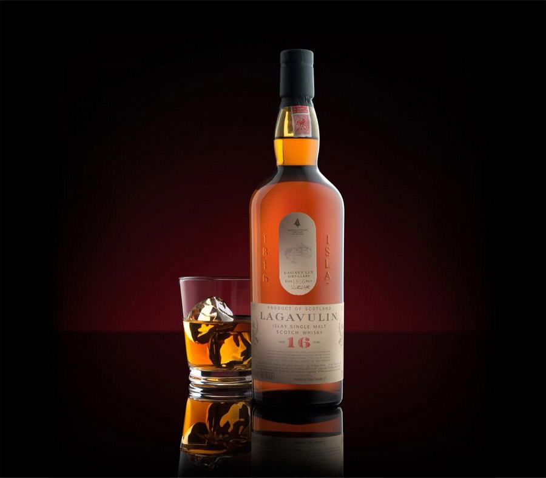
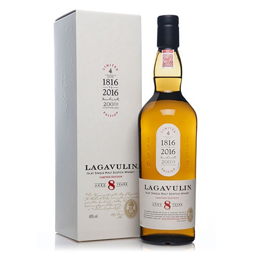
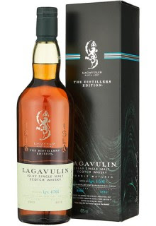

Lagavulin 16 Years Old
라가불린 16년은 전통적인 버번 캐스크에서 최소 16년동안 숙성되며 알코올 도수는 43%로 병입됩니다. 강한 훈제향, 장작향이 주를 이루며 바다 소금, 요오드, 달콤한 말린 과일과 바닐라 향이 조화를 이룹니다. 입안에서는 강한 스모키한 맛과 함께 달콤한 카라멜, 말린 과일, 약간의 초콜릿과 오크의 맛이 느껴집니다.
Lagavulin 8 Years Old
라가불린 8년은 버번 캐스크에서 최소 8년동안 숙성되며 라가불린의 설립 200주년을 기념하여 출시되었으며, 48%로 병입됩니다. 강렬한 피트 향과 스모키 향이 주를 이루며, 레몬 제스트, 바다 소금, 약간의 후추 향이 느껴집니다. 입안에서는 스모키한 피트와 함께 시트러스, 바닐라, 그리고 약간의 스파이스 맛이 조화를 이룹니다.
Lagavulin Distiller's Edition
라가불린 디스틸러스 에디션은 버번 캐스크에서 숙성된 후, 페드로 히메네즈 셰리 캐스크에서 추가 숙성을 거칩니다. 숙성연수 미표기(NAS) 위스키이며 43%로 병입됩니다. 강한 피트 향과 스모키한 향이 주를 이루며, 건포도, 말린 과일, 초콜릿, 약간의 시트러스 향이 조화를 이룹니다. 입안에서는 스모키한 피트와 함께 달콤한 셰리, 말린 과일, 다크 초콜릿, 그리고 약간의 스파이시한 맛이 조화를 이룹니다.